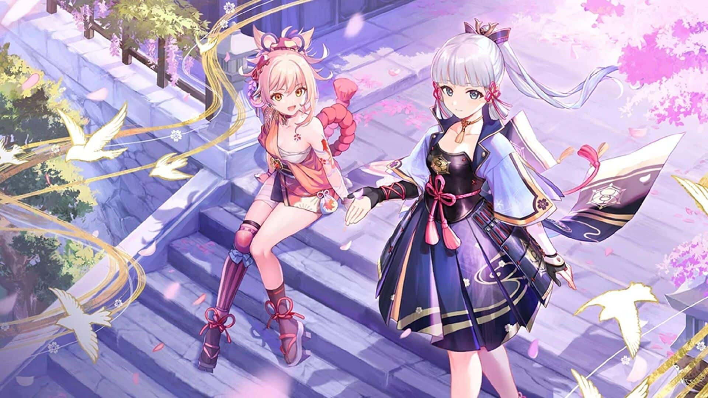
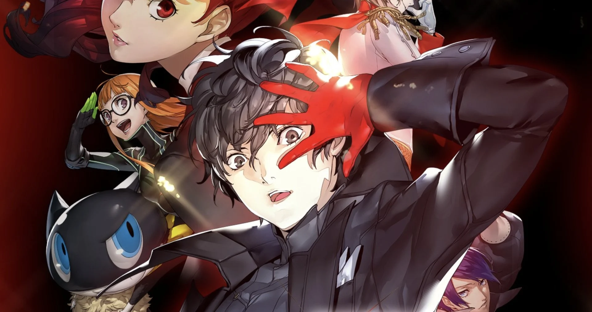
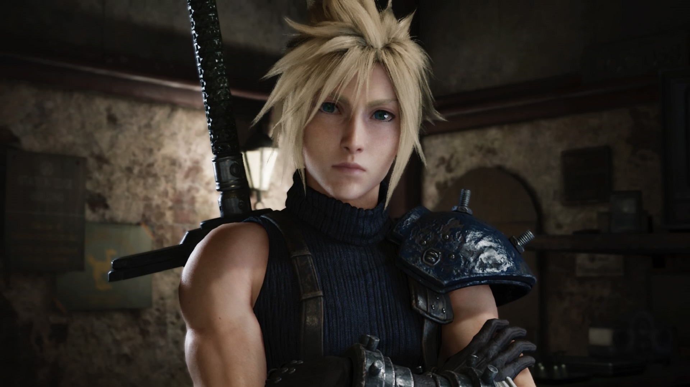
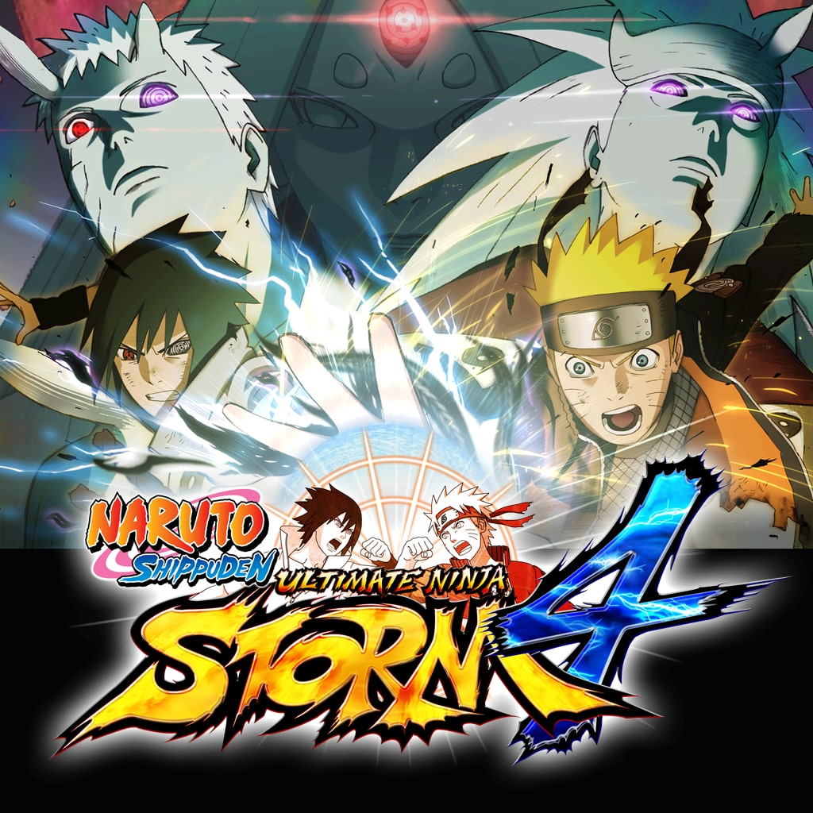
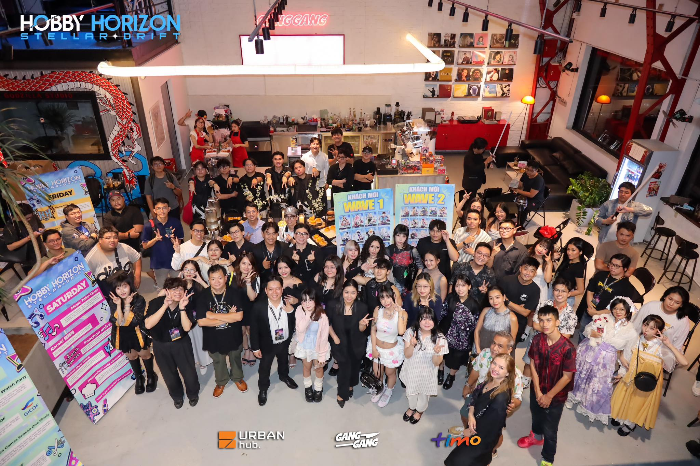

Ảnh hưởng của anime lên game hiện đại
1. Phong cách đồ họa
Anime đã góp phần định hình một chuẩn thẩm mỹ rất riêng trong ngành công nghiệp game hiện đại. Thay vì hướng đến sự chân thực tuyệt đối, nhiều tựa game lựa chọn phong cách giàu tính biểu cảm với màu sắc nổi bật và thiết kế mang tính biểu tượng.
Những đặc điểm dễ nhận thấy bao gồm:
- Nhân vật có đôi mắt lớn, biểu cảm rõ ràng
- Màu sắc tươi sáng hoặc tương phản mạnh
- Thiết kế mang tính nhận diện cao

“Genshin Impact” - Phong cách anime rõ nét trong thiết kế nhân vật và môi trường

“Persona 5” - Sử dụng màu sắc và biểu cảm đặc trưng để tạo trải nghiệm độc đáo
2. Xây dựng nhân vật
Không chỉ dừng lại ở hình ảnh, anime còn ảnh hưởng sâu sắc đến cách xây dựng nhân vật trong game. Thay vì những nhân vật “trung tính”, game hiện đại thường khai thác các kiểu tính cách đặc trưng, giúp người chơi dễ dàng nhận diện và ghi nhớ.
Một số kiểu nhân vật phổ biến bao gồm:
- Tsundere – lạnh lùng bên ngoài nhưng ấm áp bên trong
- Kuudere – ít nói, điềm tĩnh
- Nhân vật chính giàu nhiệt huyết, luôn vượt khó
Nhờ cách xây dựng này, người chơi không chỉ điều khiển nhân vật mà còn thực sự kết nối và đồng cảm với họ.
3. Cốt truyện và cách kể chuyện
Một trong những ảnh hưởng rõ rệt nhất của anime chính là cách kể chuyện. Nhiều trò chơi hiện nay được xây dựng như một bộ anime dài tập, với cốt truyện chia thành nhiều giai đoạn và phát triển dần theo thời gian.
Các yếu tố thường thấy gồm:
- Cốt truyện dài, chia thành nhiều “arc”
- Nhiều tình tiết bất ngờ, cao trào
- Chủ đề sâu sắc như bản sắc, hy sinh và tình bạn

“Final Fantasy VII” - Một ví dụ điển hình với cốt truyện giàu cảm xúc
4. Cutscene và cinematic
Bên cạnh nội dung, cách trình bày trong game cũng chịu ảnh hưởng mạnh từ anime. Các đoạn cutscene ngày càng được đầu tư với góc quay kịch tính, hiệu ứng hình ảnh và biểu cảm nhân vật chi tiết.
Nhờ đó, người chơi không chỉ “chơi game” mà còn có cảm giác như đang theo dõi một bộ phim tương tác, nơi họ chính là một phần của câu chuyện.
5. Gameplay lấy cảm hứng anime
Ảnh hưởng của anime không chỉ nằm ở hình ảnh hay cốt truyện mà còn thể hiện rõ trong gameplay. Nhiều tựa game áp dụng phong cách chiến đấu nhanh, mạnh và giàu hiệu ứng, tạo cảm giác kịch tính giống như trong các trận chiến anime.
- Kỹ năng đặc biệt hoành tráng
- Hệ thống combo liên hoàn
- Sức mạnh nhân vật tăng dần theo thời gian

“Naruto Ultimate Ninja Storm 4” - Mang đậm phong cách hành động anime
6. Văn hóa fan và cộng đồng
Anime cũng góp phần tạo nên một cộng đồng người chơi vô cùng năng động. Không chỉ dừng lại ở việc chơi game, người hâm mộ còn tham gia vào nhiều hoạt động sáng tạo như vẽ fanart, cosplay hay chia sẻ nội dung trên mạng xã hội.
Điều này giúp game không chỉ là sản phẩm giải trí mà còn trở thành một phần của văn hóa cộng đồng.
7. Xu hướng toàn cầu
Từ một phong cách đặc trưng của Nhật Bản, anime đã dần lan rộng và trở thành xu hướng toàn cầu trong ngành game. Nhiều quốc gia đã áp dụng phong cách này và kết hợp với công nghệ hiện đại để tạo ra những sản phẩm độc đáo.
Ngày nay, ranh giới giữa anime và game ngày càng mờ nhạt, khi nhiều tựa game mang lại trải nghiệm không khác gì một bộ anime mà người chơi có thể trực tiếp tham gia.
Ý nghĩa
Ý nghĩa của anime đối với đời sống
Anime không chỉ đơn thuần là một hình thức giải trí mà còn trở thành một phần quen thuộc trong đời sống tinh thần của nhiều người. Sau những giờ học tập và làm việc căng thẳng, việc xem anime giúp con người thư giãn, giải tỏa áp lực và tìm lại cảm giác thoải mái. Không giống những hình thức giải trí thông thường, anime mang đến sự kết hợp giữa hình ảnh, âm nhạc và cảm xúc, khiến trải nghiệm trở nên sâu sắc hơn.
Bên cạnh đó, anime còn là một phương tiện truyền tải những thông điệp ý nghĩa về cuộc sống. Thông qua hành trình của các nhân vật, người xem có thể nhận ra giá trị của tình bạn, sự kiên trì và ý chí vượt qua khó khăn. Nhiều câu chuyện không chỉ dừng lại ở giải trí mà còn khiến người xem suy ngẫm về bản thân, từ đó thay đổi cách nhìn nhận và hành động trong thực tế.
Không chỉ ảnh hưởng đến cá nhân, anime còn góp phần lan tỏa văn hóa và thúc đẩy sự sáng tạo. Từ thời trang, âm nhạc cho đến nghệ thuật, phong cách anime đã trở thành nguồn cảm hứng cho nhiều lĩnh vực khác nhau. Nhiều người bắt đầu học vẽ, viết truyện hoặc thậm chí phát triển game nhờ vào niềm yêu thích anime.
Ngoài ra, anime còn đóng vai trò kết nối cộng đồng. Những người có chung sở thích có thể dễ dàng tìm thấy nhau thông qua các diễn đàn, sự kiện hoặc hoạt động cosplay. Điều này tạo nên một môi trường giao lưu tích cực, nơi mọi người có thể chia sẻ cảm xúc và trải nghiệm của mình.

Cuối cùng, anime có thể ảnh hưởng đến định hướng cá nhân, đặc biệt là đối với giới trẻ. Từ những câu chuyện truyền cảm hứng, nhiều người đã tìm thấy động lực để theo đuổi đam mê, học hỏi kỹ năng mới và phát triển bản thân. Chính vì vậy, anime không chỉ là một loại hình giải trí mà còn là một yếu tố góp phần định hình tư duy và lối sống.